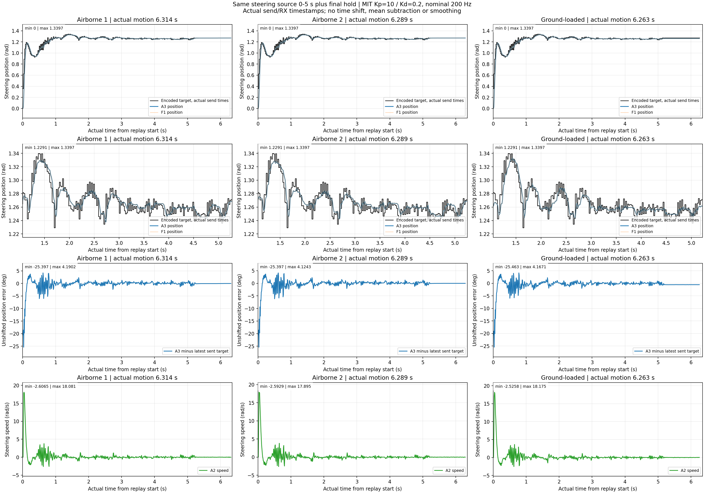
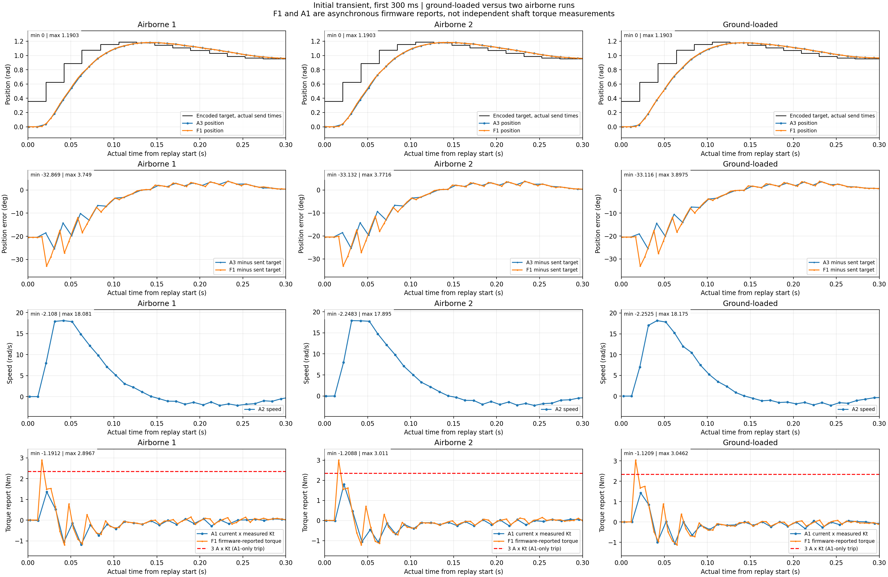
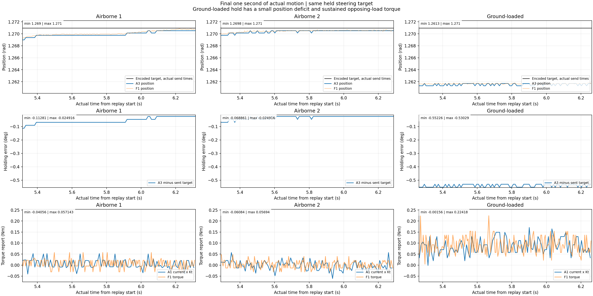
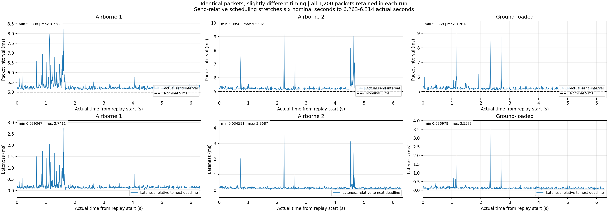
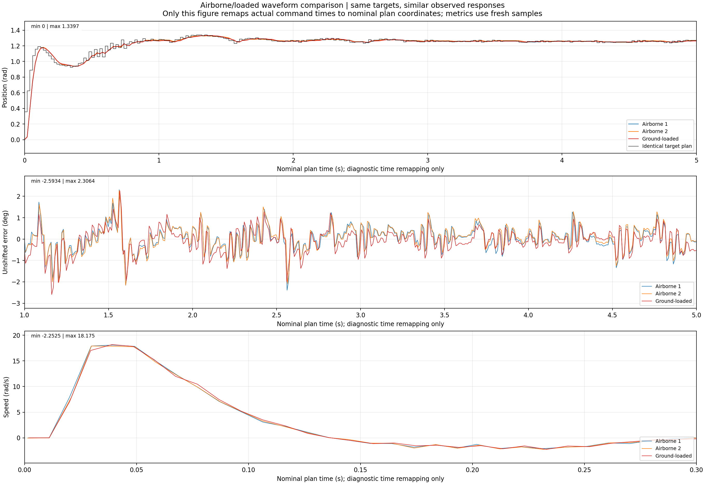

2026-10-27 · same initial source 0–5 s + final hold · MIT Kp=10/Kd=0.2, nominal 200 Hz.
Loaded tracking remains close to airborne: approximately 0.60° RMS after source second 1 and ~20 ms descriptive lag. Final hold shows a small persistent position deficit and increased torque.
Report · Summary CSV · Exact statistics




